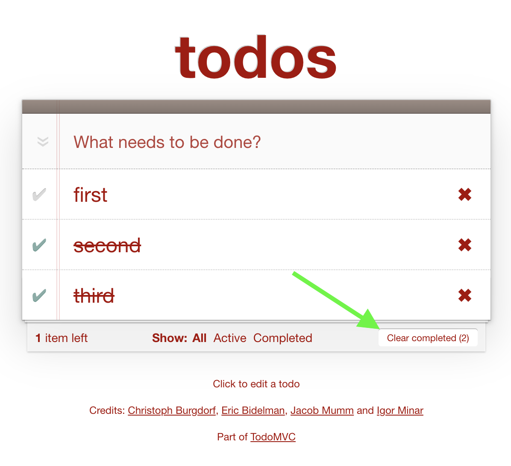

How to test a TodoMVC using Cypress using only the keyboard to confirm the app is accessible.
Let's take a good TodoMVC example made with accessability features included, as every app should have. One of the aspects we need to confirm in our tests is that the user can fully interact with the app without using a mouse. We need to test every feature using the keyboard, as posts like Keyboard Navigation Accessibility Testing suggest.
Our example app is at dylanb.github.io/todomvc with the source code available in dylanb/todomvc repo. Here is me adding a todo item and then marking it completed using the keyboard keys.
Every action can be done using the keyboard. Every element of the application can get its focus by pressing the Tab key. We can focus on the previous item by pressing Shift+Tab keys together. In the video below I rotate through the items and the buttons using the keyboard Tab key before going back to the input field.
Let's confirm the application does in fact work using the keyboard commands without using the mouse button. To write the tests I will use Cypress.io with cypress-real-events plugin for sending the real "Tab" event to the browser. Tip: read my blog post Cypress Real Events Plugin for more information about this awesome plugin.
1 2 3
$ npm i -D cypress cypress-real-events + cypress-real-events@1.5.0 + cypress@7.7.0
// load intelligent code completion for Cypress and the plugin /// <reference types="cypress" /> /// <reference types="cypress-real-events" />
import'cypress-real-events/support'
it('works using the keyboard only', () => { const noLog = { log: false } cy.visit('/') cy.contains('What needs to be done?') .should('be.visible') // for the purpose of the blog post // slow down the commands by inserting waits .wait(1000, noLog)
// the first tab should bring us to the input element // but first we must be in the application's iframe cy.get('body').realClick().realPress('Tab') cy.focused().should('have.id', 'new-todo') })
We are using .realClick() to first focus the test runner on the application, then send .realPress('Tab'). The application should set focus on the input field, which we check using the cy.focused().should('have.id', 'new-todo') assertion.
While the element has focus, let's confirm its label is visible. Let's look at the HTML markup.
We can add to our test a new command with an explicit visibility assertion.
1 2 3 4 5 6 7 8 9
// the first tab should bring us to the input element // but first we must be in the application's iframe cy.get('body').realClick().realPress('Tab') cy.focused().should('have.id', 'new-todo')
// confirm the label is visible cy.contains('label[for=new-todo]', 'What needs to be done?').should( 'be.visible', )
Note that Cypres time-traveling debugger does not reset the ":focus" when recreating the DOM snapshot. Thus if we go back to the cy.contains command, the DOM snapshot restores the regular element.
Thus to make the tests more explicit and the elements clearly positioned, let's add a wait command.
1 2 3 4 5
// confirm the label is visible cy.wait(1000, noLog) cy.contains('label[for=new-todo]', 'What needs to be done?').should( 'be.visible', )
Let's add a few Todo items by typing into the focused input field.
Note: I have used the cy.wait(1000, noLog) commands through the test to make sure the videos clearly show the focused elements.
Completing items
To complete an item the user needs to focus on the "Complete" item button by pressing the Tab key. We could write a new test or we could continue extending the same "works using the keyboard only" end-to-end test with a log message to clearly identify what the test is doing. Again, for the video I have added 1 second pauses after some test commands.
cy.log('**complete the first item**') cy.realPress('Tab') // confirm we are at "complete all" element cy.focused().should('have.id', 'toggle-all').wait(1000, noLog) cy.realPress('Tab') // confirm we are at the "complete first todo" element cy.focused() .should('have.attr', 'aria-labelledby', 'todo-0') .wait(1000, noLog) .click() // confirm the todo was completed cy.focused() .should('be.checked') .and('have.attr', 'aria-checked', 'true') .wait(1000, noLog) // marks the item as completed cy.get('#todo-list li') .first() .should('have.class', 'completed') .wait(1000, noLog)
Notice how clearly the application shows the focused element using the element outline. Please do not remove the outline.
Deleting the first item
Let's navigate to the Delete element and remove the item.
1 2 3 4 5 6 7 8 9 10 11
cy.log('**delete the first item**') cy.realPress('Tab') // first goes to the item text field .wait(1000, noLog) .realPress('Tab') // then to the delete button .wait(1000, noLog) // we should be on the delete button cy.focused().should('have.attr', 'aria-label', 'Delete') cy.focused().should('have.attr', 'aria-describedby', 'todo-0') cy.focused().click().wait(1000, noLog) // one item should be gone cy.get('#todo-list li').should('have.length', 1).wait(1000, noLog)
Editing an item
After deleting an item, we have two more application features to test. First, let's edit an item.
cy.log('**edit an item**') // the focus goes to the next "delete" button cy.focused() .should('have.attr', 'aria-label', 'Delete') .wait(1000, noLog) // now do the tab in the reverse order to get to the edit field .realPress(['Shift', 'Tab']) .wait(1000, noLog) cy.focused() .should('have.attr', 'aria-describedby', 'clicktoedit') .click() .wait(1000, noLog) // retry the focused element until the app // starts editing the item cy.focused() .should('have.class', 'edit') .and('be.visible') // if we use cy.clear() the element is deleted by the application // .clear() // thus we clear it differently .type('{selectall}{backspace}') .wait(1000, noLog) .type('confirm by testing{enter}')
cy.get('#todo-list li').should('have.length', 1) cy.contains('li', 'confirm by testing').should('be.visible').wait(1000, noLog)
The steps show the application changing the text of the todo item.
Tab through filters
From editing an item, let's navigate through the filters at the bottom of the page.
1 2 3 4 5 6 7 8 9 10
cy.log('**tab through filters**') cy.realPress('Tab') // at the delete button .wait(1000, noLog) .realPress('Tab') // at the "All" filter link .wait(1000, noLog) .realPress('Tab') // at the "Active" filter link .wait(1000, noLog) .realPress('Tab') // at the "Completed" filter link cy.focused().should('have.prop', 'nodeName', 'A') cy.focused().should('have.text', 'Completed').wait(1000, noLog)
cy.log('**active items view**') cy.realPress('Tab') cy.focused().should('have.text', 'Active').wait(1000, noLog).click() cy.hash().should('equal', '#/active') cy.get('#todo-list li').should('have.length', 1) // note: after clicking, the filter is highlighted // but the focus is still on the "All" link cy.focused().should('have.text', 'All') cy.contains('li[role=presentation] a', 'Active') .should('have.class', 'selected') .and('have.attr', 'aria-checked', 'true') .wait(1000, noLog)
The test correctly navigates through the filtered views
Avoiding clicks
"Wait!", you might say. You used the command .click() in the test - which is a mouse click event. This is a wrong command to use during the keyboard-only test.
Yes, I should have used the .realPress command only. To avoid accidentally using cy.click() let's remove this command.
1 2 3 4 5 6 7
Cypress.Commands.overwrite('click', () => { thrownewError('Cannot use click command during keyboard-only test') })
it('works using the keyboard only', () => { ... })
Our current test fails.
Instead of cy.click we should use cy.realPress('Space') or .realPress('Enter') command. This is where we find a problem - we cannot edit an existing item using the keyboard only - we need to click the item to start editing it. The application does not listen to the "Enter" key when focused on the existing Todo item.
Ok, time to fork the application and do some coding. I have copied the application into public folder and added a static server and start-server-and-test utility.
1 2 3
$ npm i -D serve start-server-and-test + serve@12.0.0 + start-server-and-test@1.12.6
We need to server the public folder and open Cypress after the port 5000 responds. These are the new NPM package script commands.
Normally I would use npm run dev to develop the code locally white testing it, see the post How I Organize my NPM Scripts.
To fix the individual item edit, I added the following code in todoKbd.js directive:
todoKbd.js
1 2 3 4 5 6 7 8
.on('keydown', function (event) { if (event.keyCode === ENTER_KEY) { scope.editTodo(scope.todo) scope.$apply() return } // the rest of the keyboard handlers })
// load intelligent code completion for Cypress and the plugin /// <reference types="cypress" /> /// <reference types="cypress-real-events" />
import'cypress-real-events/support'
Cypress.Commands.overwrite('click', () => { thrownewError('Cannot use click command during keyboard-only test') })
it('works using the keyboard only', () => { const noLog = { log: false } cy.visit('/') cy.contains('What needs to be done?') .should('be.visible') // for the purpose of the blog post // slow down the commands by inserting waits .wait(1000, noLog)
// the first tab should bring us to the input element // but first we must be in the application's iframe cy.get('body').realClick().realPress('Tab') cy.focused().should('have.id', 'new-todo')
// confirm the label is visible cy.wait(1000, noLog) cy.contains('label[for=new-todo]', 'What needs to be done?').should( 'be.visible', )
cy.log('**complete the first item**') cy.realPress('Tab') // confirm we are at "complete all" element cy.focused().should('have.id', 'toggle-all').wait(1000, noLog) cy.realPress('Tab') // confirm we are at the "complete first todo" element cy.focused() .should('have.attr', 'aria-labelledby', 'todo-0') .wait(1000, noLog) .realPress('Space') // confirm the todo was completed cy.focused() .should('be.checked') .and('have.attr', 'aria-checked', 'true') .wait(1000, noLog) // marks the item as completed cy.get('#todo-list li') .first() .should('have.class', 'completed') .wait(1000, noLog)
cy.log('**delete the first item**') cy.realPress('Tab') // first goes to the item text field .wait(1000, noLog) .realPress('Tab') // then to the delete button .wait(1000, noLog) // we should be on the delete button cy.focused().should('have.attr', 'aria-label', 'Delete') cy.focused().should('have.attr', 'aria-describedby', 'todo-0') cy.focused().realPress('Space').wait(1000, noLog) // one item should be gone cy.get('#todo-list li').should('have.length', 1).wait(1000, noLog)
cy.log('**edit an item**') // the focus goes to the next "delete" button cy.focused() .should('have.attr', 'aria-label', 'Delete') .wait(1000, noLog) // now do the tab in the reverse order to get to the edit field .realPress(['Shift', 'Tab']) .wait(1000, noLog) cy.focused() .should('have.attr', 'aria-describedby', 'clicktoedit') .realPress('Enter') .wait(1000, noLog) // retry the focused element until the app // starts editing the item cy.focused() .should('have.class', 'edit') .and('be.visible') // if we use cy.clear() the element is deleted by the application // .clear() // thus we clear it differently .type('{selectall}{backspace}') .wait(1000, noLog) .type('confirm by testing{enter}')
cy.get('#todo-list li').should('have.length', 1) cy.contains('li', 'confirm by testing').should('be.visible').wait(1000, noLog)
cy.log('**tab through filters**') cy.realPress('Tab') // at the delete button .wait(1000, noLog) .realPress('Tab') // at the "All" filter link .wait(1000, noLog) .realPress('Tab') // at the "Active" filter link .wait(1000, noLog) .realPress('Tab') // at the "Completed" filter link cy.focused().should('have.prop', 'nodeName', 'A') cy.focused() .should('have.text', 'Completed') .wait(1000, noLog) .realPress('Enter')
cy.log('**active items view**') cy.realPress('Tab') cy.focused() .should('have.text', 'Active') .wait(1000, noLog) .realPress('Enter') cy.hash().should('equal', '#/active') cy.get('#todo-list li').should('have.length', 1) // note: after clicking, the filter is highlighted // but the focus is still on the "All" link cy.focused().should('have.text', 'All') cy.contains('li[role=presentation] a', 'Active') .should('have.class', 'selected') .and('have.attr', 'aria-checked', 'true') .wait(1000, noLog) })
Testing smaller features
When we are done with the longer test, I like to see if there are smaller application features that need to be tested. Usually I suggest using code coverage as a guide to finding the missed features. In our case, the application has no built step, so using the code coverage is tricky. Let's simply look at the code to find what features the application has but we are not testing yet.
Cancel edits
The application code has the following fragment:
1 2 3 4
if (event.keyCode === ESCAPE_KEY) { scope.revertEdits(scope.todo) focus = true }
When we are editing an existing item in the list, if we press the Escape key, the edits should be reverted. Let's test it.
it('cancels edit on escape', () => { cy.visit('/') cy.contains('What needs to be done?') .should('be.visible') // for the purpose of the blog post // slow down the commands by inserting waits .wait(1000, noLog)
// the first tab should bring us to the input element // but first we must be in the application's iframe cy.get('body').realClick().realPress('Tab') cy.focused() .should('have.id', 'new-todo') .type('first{enter}') .wait(1000, noLog) cy.realPress('Tab') .wait(1000, noLog) .realPress('Tab') .wait(1000, noLog) .realPress('Tab') .wait(1000, noLog) // let's start editing .realPress('Enter') .wait(1000, noLog) cy.focused().should('have.value', 'first').type(' todo') cy.focused().should('have.value', 'first todo').wait(1000, noLog) // now Escape, use cy.type because cypress-real-events does not implement Escape yet cy.focused().type('{esc}')
// the todo item is reverted to its original text // which we check using the regular expression cy.contains('#todo-list li .todoitem', /^first$/) .should('be.visible') .wait(1000, noLog) })
Clear completed todos
Another feature we need to test is clearing the completed items using a button press. The button only appears when there are completed items.

To speed up this test we can avoid entering the todo items through the page. The application stores the todos in the localStorage object.
Cypress automatically clears the local storage before each test. We can set the items in the local storage when visiting the page to start the application with a few items before testing completing them.
The test starts almost instantly, since the data is already there. Next, let's verify that clearing the 2 completed items works.
1 2 3 4 5 6 7 8 9 10 11 12 13 14 15 16 17 18
// the focus should be set on the "All" filter link cy.focused() .should('have.text', 'All') .realPress('Tab') // at the "Active" link .wait(500, noLog) .realPress('Tab') // at the "Completed" link .wait(500, noLog) .realPress('Tab') // at the "Clear completed" button .wait(500, noLog) cy.focused() .should('have.id', 'clear-completed') .and('have.text', 'Clear completed (2)') .wait(1000, noLog) .realPress('Space')
We also need to make sure we can toggle all todos using the button next to the input element.
Again, we need a couple of todos to start with. We can move the todos array from the previous test into its own JSON file. Instead of using the cy.fixture command, we can import the JSON file into the spec file, see the post Import Cypress fixtures.
cypress/integration/spec.js
1 2
import todos from'./todos.json' // use todos array
When toggling all todos, we need to count which items are completed. First, there are two such items.
The initial focus is set on the "All" filter. We need to press "Shift+Tab" 10 times to navigate back to the #toggle-all element. We can do this by calling the cy.realPress via Lodash _.times function bundled in Cypress.
1 2 3 4 5 6 7 8 9 10
// the focus should be set on the "All" filter link // we need to navigate to the "#toggle-all" element // through each todo item with text, complete, and delete elements. cy.focused().should('have.text', 'All') Cypress._.times(10, () => cy.realPress(['Shift', 'Tab']).wait(250, noLog)) // confirm we are at the right element cy.focused() .should('have.id', 'toggle-all') .and('have.attr', 'aria-label', 'Mark all todos as completed') .wait(1000, noLog)
Let's press the element and see what happens.
1 2 3 4 5 6 7 8 9 10 11
cy.focused() .should('have.id', 'toggle-all') .and('have.attr', 'aria-label', 'Mark all todos as completed') .wait(1000, noLog) .realPress('Space') cy.get('#todo-list li.completed').should('have.length', 3) // all items are now complete cy.contains('#todo-count strong', '0').should('be.visible') cy.contains('#clear-completed', 'Clear completed (3)') .should('be.visible') .wait(1000, noLog)
What happens if we press the element again? All items will be active again.
1 2 3 4 5
// if we press the "toggle-all" again, all items will become incomplete cy.realPress('Space') cy.get('#todo-list li.completed').should('have.length', 0) cy.contains('#todo-count strong', '3').should('be.visible') cy.contains('#clear-completed').should('not.exist').wait(1000, noLog)
The entire test is a joy to watch.
Publishing the site
I have added continuous integration to my repository using GitHub Actions. Here is the entire cy.yml file.
# if the tests passed, publish the application # https://github.com/peaceiris/actions-gh-pages -name:Publishsiteüåê if:github.ref=='refs/heads/main' uses:peaceiris/actions-gh-pages@v3 with: github_token:${{secrets.GITHUB_TOKEN}} publish_dir:./public
You can see the automatically deployed app at https://glebbahmutov.com/test-todomvc-using-keyboard/ and verify the keyboard input really works. If you find a bug, let me know, as I want to make sure the tests are complete.
See also
On the personal level, I feel like the above keyboard tests should be executed against every TodoMVC example included in the todomvc.com site.